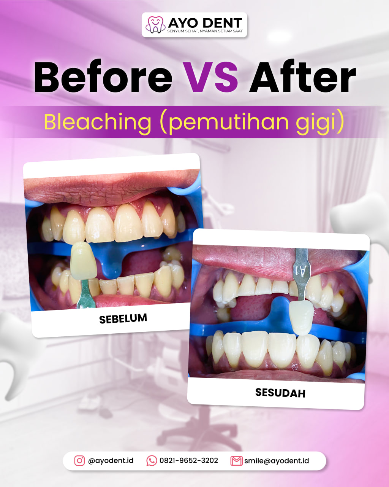
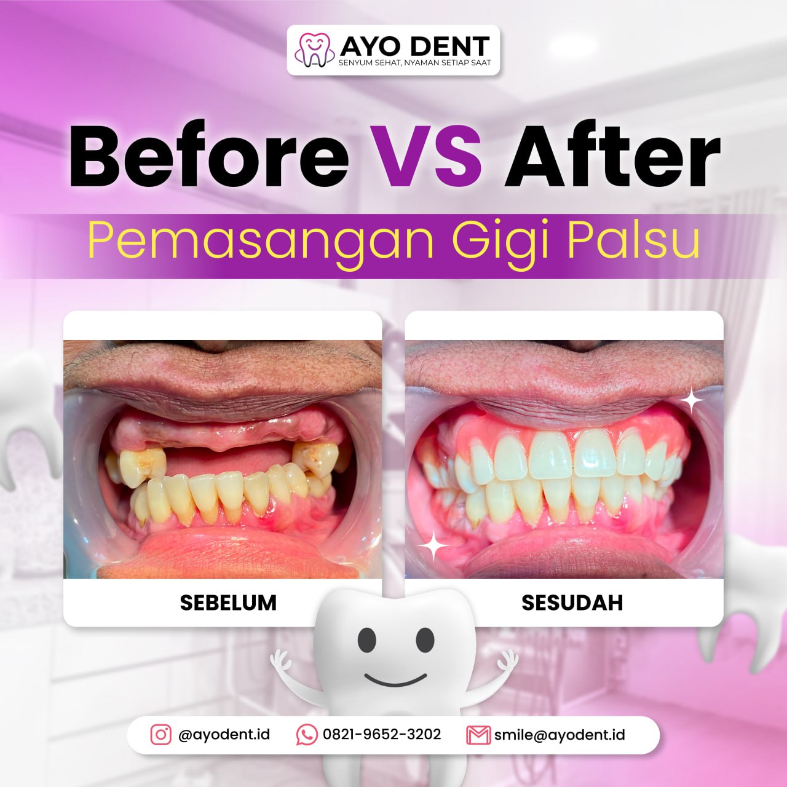
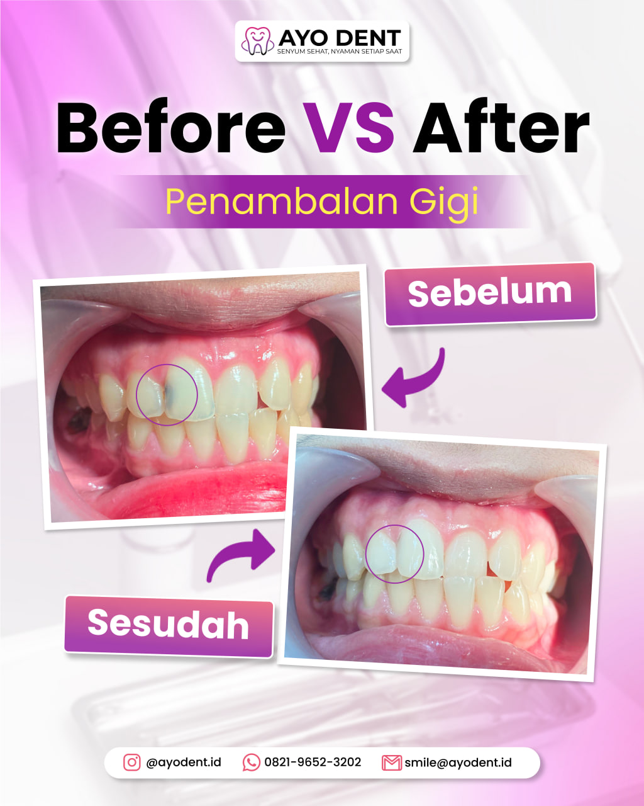
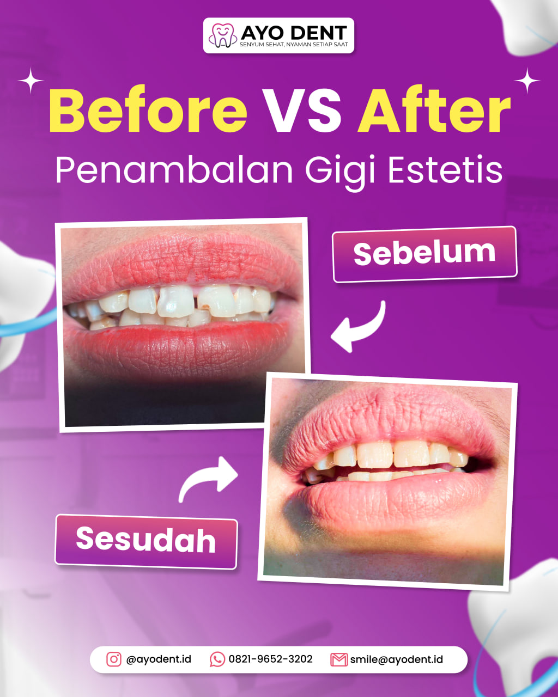
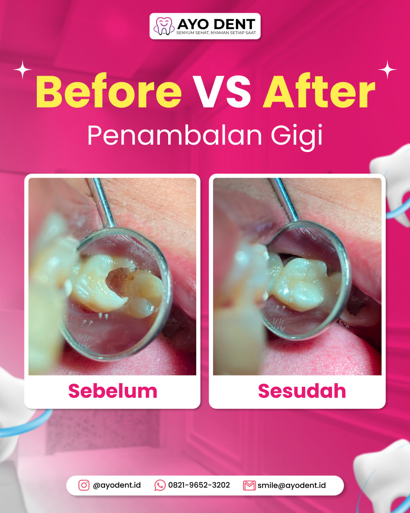
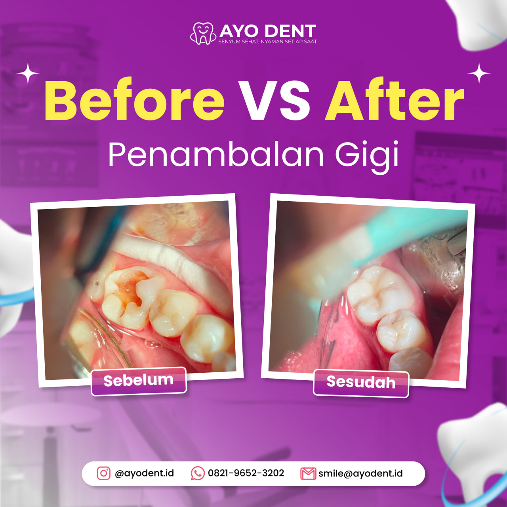
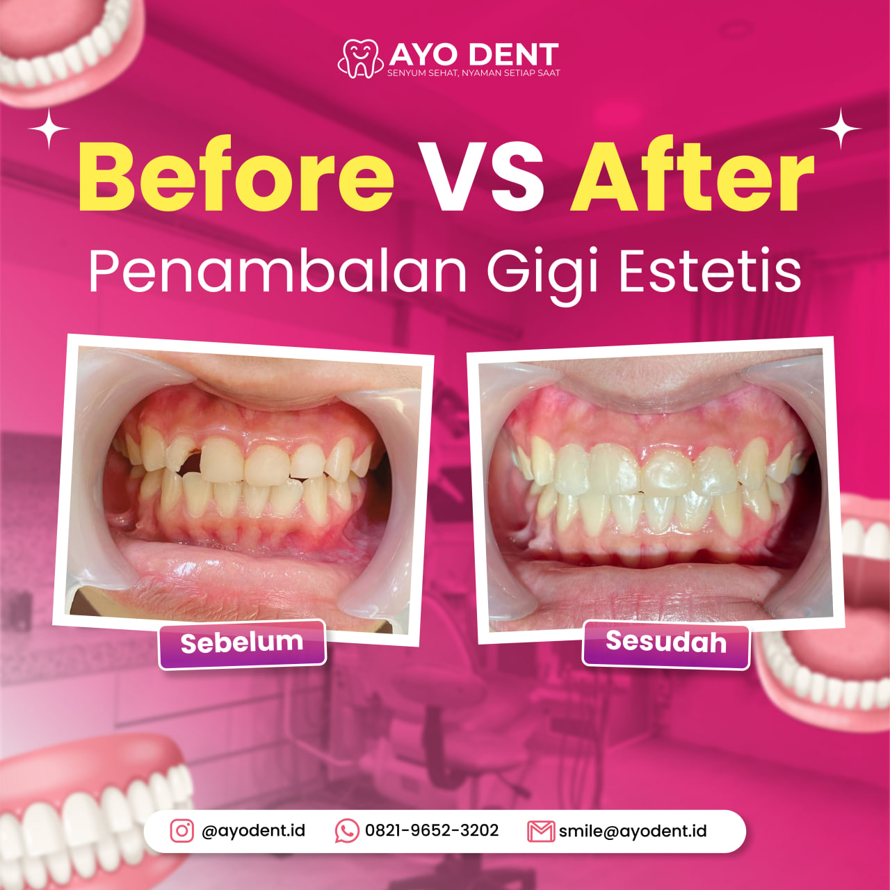
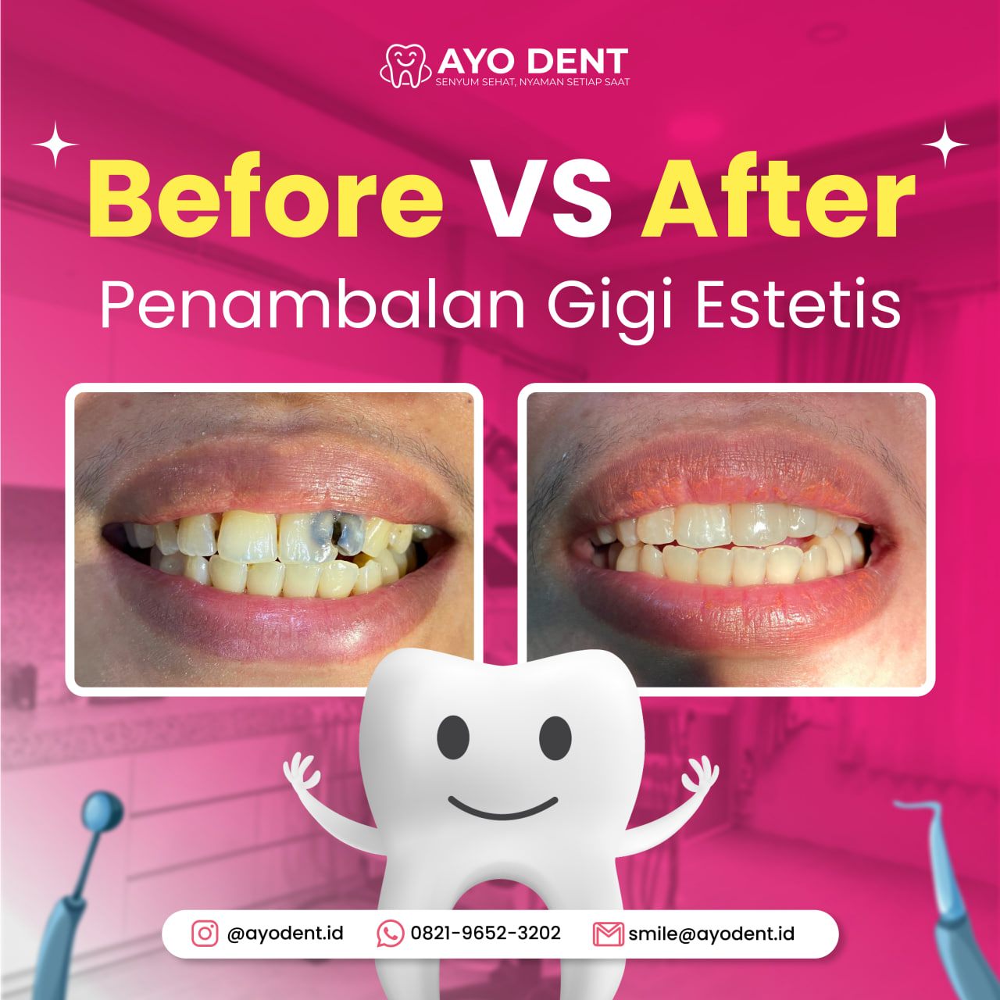

Bukti Nyata Transformasi Senyum
Setiap pasien datang dengan keraguan, namun pulang dengan
senyum kemenangan.

Pemasangan Gigi Palsu
"Kembali percaya diri tertawa lebar."

Restorasi Estetik
"Hasil sangat natural dan rapi."

Pembersihan Noda
"Proses lembut, gigi jauh lebih bersih."

Perbaikan Gigi Patah
"Senyum utuh kembali."

Scaling & Polishing
"Napas lebih segar, gusi sehat."

Penambalan Komposit
"Warna tambalan persis gigi asli."

Whitening Treatment
"Cerah seketika tanpa ngilu."

Full Arch Restoration
"Transformasi total yang menakjubkan."
← Geser untuk lihat 8 hasil transformasi lainnya →